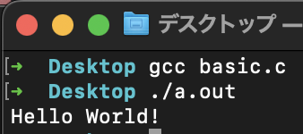

自己紹介
-
名前 : 独楽回しeddy
-
twitter : https://twitter.com/EKey2210
-
趣味 : プログラミングで動画や画像制作、ライブ・イベント遠征、ゲーム
-
使用してるもの : p5.js, glslがメイン。後はProcessing, openframeworks(C++)とかも偶に。
経緯
#include <stdio.h>
int main(void)
{
printf("Hello World!\n");
return 0;
}

経緯
-
当時先生に「最初何から始めたら良いですか？」と聞いて、Processingの存在を知る。
-
最初はなかなか定着はしなかったが、その後にNature of Codeを知ってハマってそれ以降趣味として定着し始める。
-
自分が思い浮かべたものを目に見える形で出すための手段が欲しかったが、手で描く絵が下手で諦めていた。そこでこの方法を知ることで自分もその手段が得られるのではないかと考えた。
Processing/p5.jsの利点
-
環境構築が簡単
-
図形を描くのが簡単
-
出力が図形や絵なので初心者にとっても飽きにくい
目次
- p5.jsはどんな作業環境がある？
- 自分のやり方の紹介
- まとめ
主要な作業環境
- OpenProcessing
- p5.js Web Editor
- Visual Studio Codeなどのエディター
OpenProcessing について
- Web上で起動できる。
- p5.js、Processingでコードを書いて作品が作り、投稿できる。
- 他者が作った作品・コードも見れる。
- 使いたいライブラリがあったら、それを簡単に使用可能な状態にできる。
- チュートリアルモードがある。 etc…
p5.js Web Editor について
- Web上で起動でき、p5.js でコードを書いて作品が作ることができる。
- サンプルが色々見れる。
- 書いた作品のコードをダウンロードできる。
- 自動更新がある。
- リンクを共有することで共同編集が可能 etc…
個人的な感想
- OpenProcessing はコミュニティよりの機能も持ってる。(他の方の作品を見たり、genuaryみたいな行事にも対応があったり)
- p5.js Web Editor はあくまで作るための機能。だが共同編集が可能だったり、自動更新があったりとより便利な部分がある。
- また、HTMLにスケッチを貼り付けられる。(後述)
- 両方にそれぞれ良点があり、どう使いたいかに応じて使い分ければ良いと思う。
個人的な感想
- OpenProcessing はコミュニティよりの機能も持ってる。(他の方の作品を見たり、genuaryみたいな行事にも対応があったり)
- p5.js Web Editor はあくまで作るための機能。だが共同編集が可能だったり、自動更新があったりとより便利な部分がある。
- 両方にそれぞれ良点があり、どう使いたいかに応じて使い分ければ良いと思う。
共通の欠点
- ネットが動く環境でなければ使えないこと
-> ネットがあるところでしか作業しないなら大丈夫だが、どこでも作業したい場合は場合によっては使用が出来ない。
-> 別でネットがなくても動かせる環境を用意しておくのが個人的におすすめ。
-> Visual Studio Codeなどのエディターなどを使う方法
※ あらかじめ申し上げますが、あくまで自分の方法の紹介です。自分が使いやすければそれが正解です。
使用しているもの
- Visual Studio Code(エディタ)
- Live Preview(作品を表示する際に使用1)
- Live Server(作品を表示する際に使用2)
- p5js Snippets(補完)
- p5 Manager(プロジェクト生成)
- HTML、CSS、JavaScriptのプレビュー確認が可能
- 非常に使い方が簡単
- VSCodeの半分、またはブラウザに絵を表示して、コードで微調整する…などでも使える！
- 通常p5.jsは作品をブラウザに表示させる。
-> コードを修正した場合、ブラウザに更新をかけないといけない
-> これを自動化してくれる！
- p5.jsのコードを書く際にある程度補完してくれる！
-> 補完 は関数とかを途中まで入力すると自動で関数の候補が表示され、それを押すと入力された状態になる。
- コマンドラインツールからプロジェクトを生成できるようになる。
-> テンプレートとなるファイルがあり、それに対して自分がよく使う関数や変数を定義しておくことで、それが最初から記入された状態で始められる！
まとめ
- p5.jsを始める上での方法をいくつか紹介しました。
- オフラインでも作業が出来る状態を作っておくのはおすすめです。
- 今回紹介した方法が誰かの参考になったら嬉しいです。